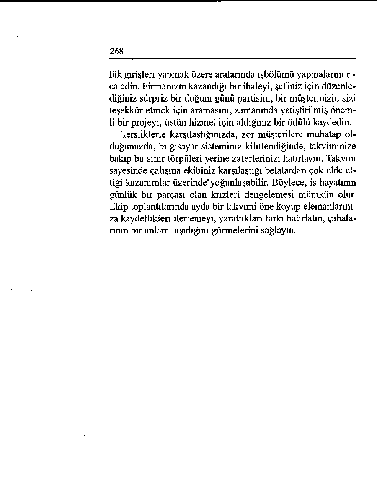

SÖZLER
GEREKEN SÖZLER
Aklınızı olan şeye takar ve sizi
Kendinize, duygularınızı konnasıl mutsuz ettiğini düşünürtrol etmeyi telkin edersiniz. Siz sünüz.
izin vermediğiniz sürece sizi
"Bana bütün söyledikleri ya mutsuz edemez.
lan mıydı? Kendimi çok kötü
"Asıl, hayatımda kötü değil iyi
hissediyorum."
giden şeyleri düşünmeliyim."
Kendisini ne kadar özlediğinizi
Hayatınızın daha yapıcı yanlan
ve onsuz hayatın ne kadar boş
üzerinde düşünmeyi tercih
olduğunu düşünürsünüz.
edersiniz.
"Cuma akşamı ne yapacağım?
"Üniversitedeki oda arkadaşı Birlikte hep güzel yerlere gimı arayıp bu akşam birlikte bir
derdik. Bunu bana nasıl yapyere gidip gidemeyeceğimizi
tı?"
sorayım."
Kafanızı bu olaya takmayı sür Zihninizi ve hayatınızı daha
dürür ve giderek kendinizi daolumlu faaliyetlerle doldurmaha kötü hissedersiniz.
yı tercih edersiniz.
" Yıldönümü müze de ne kadar
"Sağlığım yerinde, iyi bir işim
az kalmıştı. Acaba bu akşam
var ve canımın istediğini yapnerede? ”
ma özgürlüğüne sahibim.”
“En büyük özgürlüğümüz tutumumuzu seçme
özgürlüğümüzdür.”
- VICTOR FRANKL
Yirmi Dokuzuncu Bölüm
Olumlu Bir Bakış Açınız Olsun
işler istediğiniz gibi gitmediğinde kendinize ne dersiniz?
Yıllar önce bir devlet kuruluşu için bir eğitim çalışması yürütmekle görevlendirilmiştim. Kadrosu az, işyükü çok olan bölümün müdürü, bazı formların kayıt ve dosyalanmasında on sekiz ay geriden gittiklerini anlattı. Haftanın her günü dairenin
önünde uzun kuyruklar oluşuyor, insanlar daha mesai saati
başlamadan gelip ellerinde evrakları beklemeye başlıyordu.
Kendisine bu kadar bunaltıcı koşullara nasıl dayanabildiğim
sordunf. “Bunun için bir felsefenizin olması gerekir” dedi. '
Akıllı kadın. Bu çalışkan yöneticiyle tanışma zevkini tattı ğım günden beri, insanlara “Felsefeniz nedir?” diye sormak
hoşuma gidiyor. Çünkü bu, hayatı yaşama tarzlarını anlamanın
anahtarını oluşturuyor. Friedrich Nietzsche şöyle demişti: “Ya şamak için bir nedeni olan her şeye katlanır.” Sizin yaşama nedeniniz nedir? insanların ve zamanın sınavından geçebilmek
261
için bir felsefeye özellikle ihtiyacınız vardır. Duygusal tepkilerinizi, sizi sabote etmek yerine desteklemeleri için yeniden programlamanız önemlidir. Olumsuz bir şey olduğunda yapıcı felsefeniz devreye hemen girer ve meydan okumalara öfkeyle
değil, itidalle yaklaşmanıza yardımcı olur.
Felsefeniz Size Hizmet mi Ediyor,
Yoksa Stres mi Veriyor?
“Kişinin felsefesini en iyi şekilde sözleri değil, yaptığı tercihler
ifade eder. Uzun vadede yaşamlarımızı ve benliğimizi kendimiz bi çimlendiririz. Bu süreç ölünceye kadar devam eder. Ve yaptığımız
tercihlerden son tahlilde kendimiz sorumluyuzdur.”
'
- ELEANOR ROOSEVELT
Holocaust’dan sağ çıkabilenlerden birisi olan Victor Frankl
yaşadıklarım Man ’s Search fo r Meaning (însanm Anlam Arayışı) adlı kitapta toplamıştır. Bu ince kitap, Amerikan Kütüphaneler Birliği tarafından bütün zamanlann en iyi on kitabından biri olarak seçilmiştir. Frankl, kitabında yaşadıklarınızı seçme ve kontrol etmenin her zaman mümkün olmadığı, ama nasıl tepki göstereceğinizi seçmenizin her zaman mümkün olduğu sonucuna varır. Bir toplama kampında tutulmayı kuşkusuz kendisi seçmemişti ve kendisine yapılanları kontrol edebilecek durumda değildi, ama bu korkunç yaşantıdan birlikte alıp götürebileceği tutumu kendisi seçebilmişti. Nefret beslemeyi tercih etmemişti. Hayatını sürdürmeye ve kendisini öteki insanlar için olumlu bir fark yaratmaya adamaya karar vermişti.
Ruhi bakımdan sağlıklı bir yaşam tarzının köşe taşını oluşturduğuna inandığım için, Frankl’in felsefesini her Tongue Fu çalışma grubunda gündeme getiriyorum. Size yapılanları seçme olanağınız her zaman olmaz - bir araba kazasında yaralanabilirsiniz, evinizi sel alıp götürebilir, işyeriniz kapatılabilir -,
262
ama nasıl tepki göstereceğinizi seçebilirsiniz. Bu felsefenin
ürkütücü ama son tahlilde heyecan verici bir örneğini oğlum
Tom’un sağlayacağı, ne kadar düşünsem aklıma gelmezdi.
Beyzbol Yıldızlar Ligindeki sezonun son maçını kutlamak
üzere ailecek bir restorana akşam yemeğine gitmiştik. Biz çocukların birbirlerinin maçtaki vuruşlarıyla eğlenmesini izlerken, garson kahve fincanımı yeniden doldurmak üzere masamıza geldi. Tam o sırada ayağı kaydı ve elindeki içi kaynar kahve dolu kap üzerimize boca oldu. Üstüme sıçrayan damlalardan acıyla haykırdım. Sıcak kahve beyzbol giysilerinden süzülüp vücudunu haşladığı için Tom da ağlamaya başlamıştı.
Sıcak sıvı bacak derisini kavurup ikinci derece bir yanığa
yol açmasın diye, Tom’un pantolonunu hemen çıkardık. Ambulansta hastaneye giderken Tom, “Niçin ben? Ne suçum vardı? Niçin böyle oldu?” diye ağlamaya devam ediyordu. Biz kendisini rahatlatmaya çalışırken acil bölümündeki doktorlar da ilaçlarım verip yaralarını sardılar.
Manley Hail, “Bir ilke eylemde cisimleşmedikçe hiçbir zaman yararlı ya da canlı veya yaşamsal olamaz” demişti. Tom işte tam bunu yaptı. Talihsiz kazanın ertesi günü küçük karde şi okula gitmeyip onunla birlikte evde kaldı (büyük fedakârlık) ve Tom’un her ihtiyacını karşıladı, birlikte çeşitli oyunlar oynadılar. Bir sonraki gün sınıf arkadaşlarından üzerine süslü harflerle “Seni özlüyoruz”, “Çabuk dön”, “Sensiz tadı yok”
yazıları yerleştirilmiş harika bir paket aldı. Arkadaşlarından
kendisini ne kadar sevdiklerini gösteren böyle beklenmedik
bir armağan almasının Tom için anlamı çok büyüktü. Oysa daha iki hafta evde kalması gerekiyordu.
Ne mutlu ki, Tom hiçbir yara izi kalmadan iyileşti. Şimdi
dönüp bu deneyimine baktığında kötü şeylerden iyi şeyler çıkabileceğini ve çıktığını çok iyi biliyor. Bu dersi bütün hayatı boyunca birlikte taşıyacak.
263
“Niçin Ben?” Demek “Bela Benim”
Demekle Eşanlamlıdır
“Hayat bir iskambil oyununa benzer. Elinize gelen kartlar determinizmi temsil eder; onları nasıl oynadığınızsa özgür iradenizi.”
- CAVAHARLAL NEHRU
İşler yanlış gittiğinde evrensel otomatik tepki “Niçin ben?” sorusu olur. “Ben bunu hak etmedim” ya da “Bu adil değil” gibi kızgın yakarmalarla kaderinizi suçlamaya devam ederseniz, kendinizi kurban gibi hissetmeyi sürdürürsünüz. Dünyayı, masum insanların kötü şeylerle kuşatılmış olduğu acımasız bir ortam olarak algılarsınız.
Elinize “kötü kartlar” gelmişse, “İyi nerede?” diye sorarak
çok daha olumlu bir oyun çıkarabilirsiniz. Hayattaki en önemli içgörülerden biri, kötüden iyi şeyler çıkabileceğine, şimdi Tom’un yaptığı gibi, bütün kalbiniz ve ruhunuzla inanmanız-dır. Bu, kötü şeylerin iyi olduğunu söylemek anlamına gelmez. Size, hiçbir şekilde olumlu sayılamayacak cesaret kırıcı koşullar sunulmuş olabilir, ama bunlar üzerinden olumlu sonuçlara ulaşmanız mümkündür. İyi o an göze görünmeyebilir, ama ararsanız kendini gösterecektir.
No Ordinary Moments (Olağan Olmayan Anlar) adlı dü şünce kışkırtıcı kitabında yazar Dan Millman, asıl sorunun
kendimizi güçlendirmek için kaldırdığımız manevi ağırlıklar
olduğunu öne sürmektedir. Yaşamımızın küçük ayrıntılarına
takılıp kalmak yerine onların içinden ileriye bakmamızı öneriyor. “Ölüm anınızda bütün yaşamınız bir film şeridi gibi gözünüzün önünden geçecektir. Saniyenin binde biri kadar bir süre içinde - çünkü zamanın artık bir hükmü kalmamıştır - hayatınızın birçok olayını bir ders çıkarabilmek için yeniden göreceksiniz. Aklınızda şu iki soruyla hayatınızı gözden geçireceksiniz: O anda biraz daha cesur olabilir miydim? Biraz daha sevgiyle davranabilir miydim?”
264
Dinleyicilerim yıllar içinde bana, tersliklere cesaret ve sevgiyle yaklaşmada kendilerine yardımcı olmuş birçok değişik felsefe aktardılar. Öğretmen bir arkadaşım, bir düş kırıklığıyla karşılaştığında oynak bir havayla “Oh, ne âlâ!” deyip hemen başka faaliyetlere yönelir. Ebeveyni bir bakkal dükkânı işleten bir kadın, annesinin kendisine kaba müşterileri cezalandırmayı (“İstediğin peyniri almak için sen daha çok beklersin.”) dü şünmemesini, onlara merhamet duymasını (“Kendisine daha
iyi davranmayı öğretecek bir ana-babasmm olmamış olması ne
kadar kötü, değil mi?”) söylediğini anlatmıştı.
“Başkalarına, sana nasıl davranmalarını istiyorsan, öyle
davran” şeklindeki altın kural, birçok insan için bir eylem kılavuzudur. Feel the Fear and Do It Anyway (Korkun Ama Gene de Yapın) adlı kitabında Susan Jeffers, bir terslikle karşılaştığınızda kendinize, “Bununla başa çıkabilirim” sözünü tekrar etmenizi öneriyor. Bu cümle tehdit edici koşullar karşısında soğukkanlılığınızı muhafaza etmenizi sağlayacak sihirli bir
söz işlevi görür. Bu üç kelime karamsarlığa (“Yapamam”) kapılmanızı önler, bir güven hissi (“Yaparım”) doğurur.
Ann Landers okuyucularına şunu tavsiye ediyor: “Dertleri
hayatınızın kaçınılmaz bir parçası olarak kabul edin ve kendinize şu en rahatlatıcı sözü söyleyin: Bu da geçer.” İşler yanlış
gittiğinde umutsuzluk içinde debelenmek yerine, bu sıkıntının
geçici olduğunu ve daha iyi yarınlar ummak için sayısız neden
olduğunu hatırlamalısınız.
Tersliklere Geniş Açılı Bir Mercekten Bakın
“Hayatı art arda gelen bir dizi dert ve sıkıntı olarak görebileceğimiz gibi, bir hazine birikimi olarak da görebiliriz. Bu tercihimize kalmıştır."
- ANONİM
Kendinizi iyi hissetmediğinizde nasıl anında perspektif kaza-
265
ıabileceğinizi biliyor musunuz? Şunu anlamalısınız: Eğer içiniz sıkılıyorsa, zihinsel merceklerinizi tamamen kendi , dert ve sıkıntılarınıza odaklandırmışsınız demektir. Zor bir insan ya da rahatsız edici bir duruma takılıp kalmışsımzdır. Daha geniş
açılı bir merceğe geçip dünyanızdaki yanlış değil de doğru giden şeylere odaklanırsanız, tutumunuzu anında değiştirebilirsiniz. Sıkıntılarınıza takıp kalmak yerine, çevrenizdeki ferahlıkların farkına varırsınız.
“Söylemesi kolay, ama uygulaması hiç de öyle değil” diye
mi düşünüyorsunuz? Haklısınız. Onun için zihinsel geniş açılı merceğinizi birikmiş hâzinelerinize odaklandırmada size yardımcı olabilecek daha elle tutulur bir yöntem önereceğim.
Gözünüzü Çevrenizdeki Harikalara Açın
“Evren, daha da belirginleşmek için bıkmadan bizim ilgimizi bekleyen harika şeylerle doludur.”
- EDEN PHILLPOTTS
Güzel bir duvar takvimi alıp mutfağınıza asm. Çevrenizdeki
harika şeylere daha çok ilgi gösterirseniz, katlandığınız adaletsizlikleri dengeleyebilirsiniz. Her gün, o gün iyi gitmiş olan bir şeyi not edin. Sabah kahvaltıda attığınız kahkahayı, gün doğuşunda yaptığınız dinçleştirici yürüyüşü, nihayet ödeyebildiğiniz bir faturayı, duymazdan geldiğiniz gülünç bir sataşmayı, bahar gününün muhteşemliğini, mutlu bir rastlantıyı ya da izlediğiniz güzel filmi kaydedin. O gün olan güzel bir şeyi not etmek için on saniyenizi ayırın.
Frank Lloyd Wright’m dediği gibi, “Güzellikleri aptalca
görmezden gelirseniz, bir süre sonra onları hiç göremez hale
gelirsiniz. Hayatınız yoksullaşır. Ama güzelliklere akıllıca yatırım yaparsanız, bütün hayatınız boyunca size eşlik ederler.”
Dünyanızdaki güzellikleri kaydedin, o zaman size hep refakat
edeceklerdir.
266
Happiness Is a Serious Problem (Mutluluk Ciddi Bir Problemdir) adlı eserinde Dennis Prager ilginç bir saptama yapar.
Uzun yıllar bu konuyu araştırdıktan sonra Prager, insanları sadece tek bir şeyin mutlu ettiği sonucuna varmıştır. Bunu bir düşünün. Para insanları mutlu etmez. Şöhret de öyle. Mutsuzluk içinde boğulan ün ve servet sahibi o kadar çok kişi var ki.
Hatta sevgi ve sağlık bile insanları mutlaka mutlu kılmaz.
İnsanların mutluluğunu doğrudan belirleyen tek şey minnettarlık duygusudur. Prager’in vurguladığı gibi, minnetkarlık ve şükran, içinde bulunduğunuz koşullardan bağımsız olarak duyabileceğiniz bir duygudur. Her şeye sahip olabilirsiniz,
ama sahip olduklarınıza değer biçmiyorsanız kendinizi çok
kötü hissedersiniz. Çok az şeye sahip olabilirsiniz, ama bunlara değer veriyorsanız kendinizden hoşnut olursunuz. Çok basittir: Ne kadar minnettar olursanız, o kadar mutlu olursunuz.
Ne kadar az şükran duyarsanız, o kadar mutsuz olursunuz.
Eğer her gün güzel şeyleri mutfağınızdaki takvime kaydetmeye zaman ayırırsanız, haftalar ve aylar geçtikçe neye sahip olursunuz, biliyor musunuz? Şunlara: • birikmiş hâzinelerinizin yazılı bir kaydına
• dünyanızdaki doğru giden her şeyin bir kanıtına
• minnettar olmanız gereken her şeyin görsel bir göstergesine
• güzel anlarınızı size sürekli hatırlatan bir arşive
Teresa Ana bir keresinde şaka yollu, “Tann’mn beni başa
çıkamayacağım bir şeyle karşılaştırmayacağını biliyorum.
Keşke, bana bu kadar güvenmeseydi” demişti. Eğer hayat sizi
başa çıkmamz gereken çok şeyle karşı karşıya bırakıyorsa, duvar takviminiz sayesinde, hayatın sefil yanlan yerine mucizeleri üzerinde odaklanabilirsiniz.
267
Zor Zamanlar mı, Mutlu Zamanlar mı?
“Güzel hatıralar mutluluk için ikinci bir şanstır.”
- KRALİÇE İKİNCİ ELIZABETH
Eğer çocuk sahibiyseniz, çocuklarınızın hayatını kontrol edemeyeceğinizi ya da onların başına gelen her şeyi belirleyeme-yeceğinizi mutlaka öğrenmiş olmalısınız. Onlara güzel hatıralar kazandırabilirsiniz, zor zamanlarını dengeleyecek iyi zamanlar yaşatabilirsiniz. Aristoteles haklı olarak, “Mutluluk bize bağlıdır” demişti. Mutluluğunuz, size her zaman sırtınızdaki yüklere karşı sahip olduğunuz nimetleri hatırlatacak bir günlük tutmanıza bağlıdır.
Eğer talihliyseniz, çocuklarınız size, “Haydi, yemekten
sonra takvimimize bir bakalım” diyecek ve siz de mutlu anlarınızın ikinci ya da üçüncü kez canlanması için bir fırsat bulmuş olacaksınız. Ailecek en hoşlandığımız anılardan biri, bir Noel akşamına aittir. Andrew, Noel hediyesi olarak aldığı ambalajı son derece şık paketi heyecanla açmış ve içindeki oyuncak motorlu kamyonu gördüğünde bir sevinç çığlığı atmıştı.
Fakat kamyonu çalıştırmak için birkaç dakika uğraştıktan sonra, beceremeyince suratını asarak, “Bu çalışmıyor” diye sızlanmaya başlamıştı. Ağabeyi Tom sevecen bir sesle, “Tabii çalışmaz” dedi, “demonte etme talimatlarını okumadın ki!”
İş Hayatındaki Terslikleri Dengelemek
“Eğer herhangi dışsal bir olgu size sıkıntı veriyorsa, çektiğiniz
acı o şeyden değil, sizin ona ilişkin tasavvurlarınızdan kaynaklanıyordur; ve siz her an bunu iptal etme gücüne sahipsinizdir.”
- MARCUS AURELIUS
Eğer bir büroda çalışıyorsanız, bir takvim daha alm ve herkesin erişebileceği bir yere asm. Çalışma arkadaşlarınızdan, gün 
268
lük girişleri yapmak üzere aralarında işbölümü yapmalarını rica edin. Firmanızın kazandığı bir ihaleyi, şefiniz için düzenlediğiniz sürpriz bir doğum günü partisini, bir müşterinizin sizi teşekkür etmek için aramasını, zamanında yetiştirilmiş önemli bir projeyi, üstün hizmet için aldığınız bir ödülü kaydedin.
Tersliklerle karşılaştığınızda, zor müşterilere muhatap olduğunuzda, bilgisayar sisteminiz kilitlendiğinde, takviminize bakıp bu sinir törpüleri yerine zaferlerinizi hatırlayın. Takvim sayesinde çalışma ekibiniz karşılaştığı belalardan çok elde ettiği kazanımlar üzerinde'yoğunlaşabilir. Böylece, iş hayatımn günlük bir parçası olan krizleri dengelemesi mümkün olur.
Ekip toplantılarında ayda bir takvimi öne koyup elemanlarınıza kaydettikleri ilerlemeyi, yarattıkları farkı hatırlatın, çabalarının bir anlam taşıdığım görmelerini sağlayın.
269
OLUMLU BİR BAKIŞ AÇISI İÇİN EYLEM PLANI
Para çekmek için bankanıza gidiyorsunuz ve size elektriklerin kesildiğini söylüyorlar. Ne bilgisayarlar ne de otomatik para çekme makinesi çalışıyor. Bu aksiliğe karşı ne yaparsınız?
UNUTMANIZ GEREKEN
KULLANMANIZ
SÖZLER
GEREKEN SÖZLER
Moraliniz bozulur.
işler ters gittiğinde devreye gi "Buraya kadar boşu boşuna
ren bir felsefeniz vardır.
geldim."
"Bu durumla başa çıkabilirim.
O kadar da büyük bir sorun de ğil."
Olumsuz düşünceleriniz asabı Olumlu düşünceleriniz size
nızı bozmaya devam eder.
yardımcı olur.
"Bütün öğleden sonram altüst
"Belki bir başka otomatı kullaolacak. Oturup arızayı gidernıp kredi kartı hesabımdan pamelerini mi bekleyeceğim?"
ra çekebilirim."
Durumun size verdiği sıkıntıyı
Terslikleri hayatın bir parçası
düşünür ve canınızı daha da sıolarak kabul edip geçici oldukkarsınız.
larını düşünürsünüz.
"Böyle aksiliklerden nefret edi "Bu da geçer. Bir yıl sonra bu
yorum. Sanki çok boş zamanım
olayı hatırlamayacağım bile.
var..."
Gidip öteki işlerimi halledeyim.”
Zihinsel merceklerinizi bu sı Geniş açılı bir-merceğe geçip
kıntıya odaklandırmayı sürdüanında perspektif kazanırsınız.
rürsünüz.
"Etrafına bak. Hayatında ne
"Bu durumu bankaya şikâyet
kadar çok düzgün giden şey
edeceğim. Niçin bir jeneratör
var. Minnettar olmalısın.”
almıyorlar? ”
“Gelin, birbirimize karşı daha nazik olalım.”
- ALDOUS HUXLEYÎN SON SÖZLERİ
Otuzuncu Bölüm
Nezaketten Yaşatın
“Nezaketten öldürmek” deyişini hiç duydunuz mu?
Nezaket ve öldürmek gibi birbiriyle zıt ve çelişkili anlamları olan kelimelerle bir şey anlatmaya kalkışmak pek de hoş
olmasa gerektir. İnsanları yaşatmaya çalışmak çok daha uygun
olmaz mı?
Hangi inanç ya da dinden olursanız olun, maneviyatınızı
ifade eden bir sözcük mutlaka vardır. Bu göze görünmez yaşama kudreti Japonca’da ki sözcüğüyle ifade edilir. Çinliler ise bu enerjiye çi derler. Dövüş sanatlarında eksi ki ile artı ki’den söz edilir, dışarıya hangisini yansıtacağımızın tercihi bize aittir. K i’niz ne kadar pozitif olursa, başka insanların negatif enerjisine karşı o kadar bağışık olursunuz. Yıldız Savaşları filmindeki Luke Skyvvalker’ın deyişiyle söylersek, karanlık taraftan çok aydınlık taraf için çalışan bir kuvvet olabilmek için kudretli bir maneviyatı nasıl geliştirebilirsiniz?
271
Pygmalion İlkesinin (bazen Bumerang Yasası de denir) size karşı değil, sizin için çalışmasını sağlayabilirsiniz. Bunun anlamı şudur: “Ne verirseniz, onu alırsınız.” Eğer insanlara kuşku ve küçümsemeyle davranırsanız (karanlık ya da eksi
ki), onlar da size aynı şekilde davranır. Gösterdikleri tepki sizin algılamanızı doğrular, böylece aynı tutumu sürdürürsünüz ve dünyanın husumetle dolu olduğuna ilişkin görüşünüz için daha çok kanıt ortaya çıkmış olur... karamsar kısır döngü sürüp gider.
Tersine eğer insanlara onur ve saygıyla davranırsanız (aydınlık ya da artı ki), aynı şekilde yanıt vermeleri çok daha muhtemeldir. Dostça tepkileri dünyanın ihtimam dolu bir yer olduğu görüşünüzü kuvvetlendirir, bu da sizin davranışınızı
destekleyip pekiştirir ve iyimser döngü yukarıya tırmanmaya
devam eder.
Ki Kavşakları
“Huzurlu olmak, içe dönük örgütlü olabilme yeteneğidir; kafa karışıklığı, güçlük, çatışma ya da karşıtlıklar ortasında iç sükûnetinizi koruyabilmek demektir.”
- NORMAN VINCENT PEALE
Bu ilkeyi günlük yaşamınızda nasıl uygulayabilirsiniz? Bir
terslikle karşılaştığınızda kendinizi bir ki kavşağına gelmiş gibi düşünerek. Aşağıya giden yolu ya da yukarıya gideni tercih etmek elinizdedir. En azından, hangi yolu seçeceğinize karar vermek için birkaç saniye düşünebilirsiniz.
Hemen tepki gösterip birkaç seviyesiz söz söylemenize izin
verirseniz, aşağıya giden yola sapmışsınız demektir ve ağzınızdan çıkan sözler sizi daha da hızlandırır. Bu yolu seçmek çoğu zaman daha kolaydır ve çok daha caziptir. Ne var ki, çığ
çabucak hız kazanır, eksi ki’niz giderek yoğunlaşır ve sizi iyice aşağıya, insan ruhunun karanlık yanma götürür.
272
Eğer birkaç saniye düşünüp olayla ilgili birkaç iyi söz sarf
etmeyi başarabilirseniz (kökleşmiş sevecen felsefenizin devreye girdiği yer burasıdır), çok daha olumlu bir eylem hattı tuttu-rabilirsiniz ve artı ki’niz sizi hemen çekişmenin üstüne yükseltir. Bu yolu tercih etmek genellikle daha çok çaba gerektirir, ama hepsini aşıp tepeye vardığınızda gözlerinizin önüne serilen manzara tırmanmaya değecek kadar güzeldir.
İdeal durumda, çevrenize barışseverlik yansıtmaya kararlı
olmanız, insanları size kaba davranmaktan alıkoyar. Çicero,
“Nezakette ısrar etmek kötü huyluları fetheder” demiştir. Ama
gerçekte bunun her zaman böyle olmayacağım bilirsiniz. Ne
var ki önemli olan, karşınızdaki insanı olumlu yönde etkileyin
ya da etkilemeyin, onurlu davranmada ısrarlı olmanızın kendi
açımzdan bir ödül anlamına gelmesidir.
Kurt Vonnegut, “Ancak fikirlerimiz insani olduğu kadar
sağlıklıyızdır” diye yazar. Düşmanca olmak yerine insansever
olmayı tercih ettiğinizde, bütün zamanlar için durumsal olmayan bir konum almış olursunuz. Ne olursa olsun olumlu enerji yansıtmayı seçerseniz, akimız ya da ruhunuz kışkırtmalardan uzak sakin kalır. Bu sayede iç huzurunuz nerede bulundu ğunuz, kiminle karşı karşıya olduğunuz ya da ne olduğundan
bağımsız kalır, onu gittiğiniz her yere birlikte götürebilirsiniz.
Sürekli İyilik
“İyilik, ne kadar küçük de olsa, hiçbir zaman boşa gitmez.”
- EZOP
Hayat bana iç huzuruyla ilgili bu düşüncelerimi sınamak için
birçok kez fırsat sundu. Bir keresinde, bir Tongue Fu seminerinin ardından yanıma gelen bir beyefendi, bana iltifat etmek amacıyla, “Şu hemşireyle cerrah öyküsünü çok beğeniyorum.
İnsan ikinci kez dinleyince daha iyi anlıyor” dedi.
Kendisine, “Seminerlerime daha önce de katılmış mıydınız?” diye sordum.
273
“Hayır” dedi, “ama aynı öyküyü son eyalet kongremizde
kelimesi kelimesine bir başka konuşmacıdan dinledim. Yaptı ğı sunuş aslında sizinkine çok benziyordu. KÖH Trenine atlamaktan, Unutulacak ve Kullanılacak Sözlerden ve Ustaca Çıkmaktan söz etti.”
Şaşırmıştım. Bunlar benim öykülerim ve benim fikirlerim—
di. Bunları geliştirmek ve inceltmek için çok zaman harcamıştım. Bu kişinin bunları alıp bana hiç atıfta bulunmadan kullanması ne kadar büyük bir küstahlıktı. Çok kızmıştım. Akşam bir başka konuşmacı dostumu arayıp bana akıl vermesini rica ettim.
Maggie şöyle dedi: “Sam, bu durumda ne yapman gerekti ğine iyi karar vermelisin, çünkü bizim işimizde bu tür şeyler
çok sık olur.” Sonra, “Yılda kaç konuşma yapıyorsun?” diye
sordu. “Yaklaşık yetmiş beş” dedim. “Ortalama kaç dinleyicin
oluyor?” Cevap verdim: “Otuzdan üç bine kadar değişiyor.”
Maggie rakamları çarpıp toplayıp şu sonuca vardı: “Demek ki,
anlattıklarını yılda en az yirmi beş bin kişi dinliyor. Bunların
bazılarının senin tekniklerini alıp kendilerininmiş gibi başkalarına anlatmasında şaşılacak bir şey yok. Ya bunların peşine düşüp onları ikaz edeceksin ya da ne halleri varsa görsünler diyeceksin.
“Sen niçin bu iştesin?” diye sordu Maggie. “Mümkün oldu ğu kadar çok insan için bir fark yaratmak için elbette” diye yanıtladım. “Öyleyse” dedi, “birisi senin öykünü anlatıyor ve insanlar bundan yarar sağlıyorsa, bu senin arzu ettiğin şey olmuyor mu? Cimri ve mülkiyet düşkünü olabilirsin, ama bu seni sadece sinirli yapar. Devamlı, birilerinin senin fikirlerini çalmakta olduğundan endişe eder durursun.
“Bunun yerine bolluk içindeki bir yerde yaşadığını düşün.
Elindeki materyal konusunda cömert ol. Bunları yaygınlaştırmaları için insanları yüreklendir. Uzun vadede bu seni çok daha mutlu edecektir.”
Daha sonra Maggie’nin öğütlerini (bütün yazar ve konuş
274
macılar öğüt verir) hayata geçirmek için birçok kez fırsatım
oldu ve onun haklı olduğunu gördüm. Hangi meslek ya da işte olursanız olun, her zaman sizin malzemenizi çalacak kendini bilmezler olacaktır. Aşağıya giden yolu seçip kafanızı buna takarsanız, kendinizi kötü hisseder ve değerli zamanınızı kü çük mülkiyet kavgalarında boşa harcarsınız. Onun yerine yukarı giden yolu seçin, elinizdeki malzemeyi paylaşın, değer katmada yoğunlaşın ve “insanlara iyi niyetle yaklaşma” tutumunu devam ettirin. Maggie’nin bilgece önerdiği gibi, bu size daha iyi bir varoluş sunacaktır.